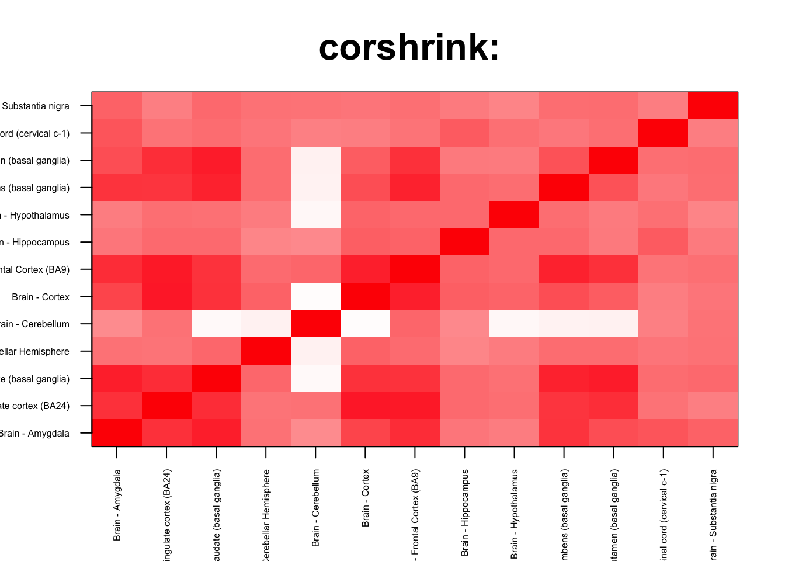

We check for enrichment analysis inside the brain
corshrink_data <- get(load("../output/ash_cor_only_voom_pearson_normal_gtex_tissues.rda"))
cor_data <- get(load("../output/cor_tissues_non_ash_voom_pearson.rda"))common_samples <- get(load("../output/common_samples.rda"))
tissue_labels <- read.table(file = "../data/GTEX_V6/samples_id.txt")[,3]
#library(data.table)
#data <- data.frame(fread("../data/GTEX_V6/cis_gene_expression.txt"))
#matdata <- t(data[,-c(1,2)])
gene_names <- as.character(read.table(file = "../data/GTEX_V6/gene_names_GTEX_V6.txt")[,1])
gene_names_1 <- as.character(sapply(gene_names, function(x) return(strsplit(x, "[.]")[[1]][1])))
U <- unique(tissue_labels)tab <- array(0, dim(corshrink_data)[3])
for(m in 1:dim(corshrink_data)[3]){
temp <- corshrink_data[order_index[1:13], order_index[(1:13)],m]
tab[m] <- (quantile(temp[row(temp) > col(temp)], 0.5))
}
ordering_high <- order(tab, decreasing = TRUE)[1:1000]
ordering_low <- order(tab, decreasing = FALSE)[1:1000]top_gene <- gene_names_1[ordering_high[1]]
col=c(rev(rgb(seq(1,0,length=1000),1,seq(1,0,length=1000))),
rgb(1,seq(1,0,length=1000),seq(1,0,length=1000)))
image(as.matrix(corshrink_data[order_index[1:13],order_index[1:13], ordering_high[1000]]),
col=col, main=paste0("corshrink: "), cex.main=2,
xaxt = "n", yaxt = "n", zlim=c(-1,1))
axis(1, at = seq(0, 1, length.out = 13), labels = U[order_index[1:13]], las=2, cex.axis = 0.5)
axis(2, at = seq(0, 1, length.out = 13), labels = U[order_index[1:13]], las=2, cex.axis = 0.5)
bottom_gene <- gene_names_1[ordering_low[10]]
col=c(rev(rgb(seq(1,0,length=1000),1,seq(1,0,length=1000))),
rgb(1,seq(1,0,length=1000),seq(1,0,length=1000)))
image(as.matrix(corshrink_data[order_index[1:13],order_index[1:13], ordering_low[1000]]),
col=col, main=paste0("corshrink: "), cex.main=2,
xaxt = "n", yaxt = "n", zlim=c(-1,1))
axis(1, at = seq(0, 1, length.out = 13), labels = U[order_index[1:13]], las=2, cex.axis = 0.5)
axis(2, at = seq(0, 1, length.out = 13), labels = U[order_index[1:13]], las=2, cex.axis = 0.5)
high_inside_brain_genes <- gene_names_1[ordering_high]
low_inside_brain_genes <- gene_names_1[ordering_low]
write.table(cbind.data.frame(high_inside_brain_genes), quote = FALSE, file = "../utilities/inside_brain/high_inside_brain.txt", row.names = FALSE, col.names = FALSE)
write.table(cbind.data.frame(low_inside_brain_genes), quote = FALSE, file = "../utilities/inside_brain/low_inside_brain.txt", row.names = FALSE, col.names = FALSE)tab <- read.delim("../utilities/inside_brain/pathway_high.tab")
head(cbind.data.frame(tab$pathway, tab$q.value), 100)## tab$pathway
## 1 TNF signaling pathway - Homo sapiens (human)
## 2 Validated transcriptional targets of AP1 family members Fra1 and Fra2
## 3 Attenuation phase
## 4 Legionellosis - Homo sapiens (human)
## 5 HSF1 activation
## 6 Antigen processing and presentation - Homo sapiens (human)
## 7 Immune System
## 8 Staphylococcus aureus infection - Homo sapiens (human)
## 9 HSF1-dependent transactivation
## 10 Herpes simplex infection - Homo sapiens (human)
## 11 HTLV-I infection - Homo sapiens (human)
## 12 Influenza A - Homo sapiens (human)
## 13 Pertussis - Homo sapiens (human)
## 14 Epstein-Barr virus infection - Homo sapiens (human)
## 15 Th17 cell differentiation - Homo sapiens (human)
## 16 AP-1 transcription factor network
## 17 Nuclear Receptors Meta-Pathway
## 18 Allograft Rejection
## 19 IL6-mediated signaling events
## 20 Cellular response to heat stress
## 21 Oncostatin M Signaling Pathway
## 22 Neutrophil degranulation
## 23 Photodynamic therapy-induced NF-kB survival signaling
## 24 Spinal Cord Injury
## 25 Tacrolimus/Cyclosporine Pathway, Pharmacodynamics
## 26 Regulation of HSF1-mediated heat shock response
## 27 Binding and Uptake of Ligands by Scavenger Receptors
## 28 Graft-versus-host disease - Homo sapiens (human)
## 29 Inflammatory bowel disease (IBD) - Homo sapiens (human)
## 30 Senescence and Autophagy in Cancer
## 31 Photodynamic therapy-induced unfolded protein response
## 32 Cellular response to heat stress
## 33 Osteoclast differentiation - Homo sapiens (human)
## 34 Type I diabetes mellitus - Homo sapiens (human)
## 35 ATF6-alpha activates chaperone genes
## 36 Rheumatoid arthritis - Homo sapiens (human)
## 37 Apoptosis Modulation and Signaling
## 38 Apoptosis Modulation and Signaling
## 39 Apoptosis Modulation and Signaling
## 40 Leishmaniasis - Homo sapiens (human)
## 41 NF-kappa B signaling pathway - Homo sapiens (human)
## 42 MAPK signaling pathway - Homo sapiens (human)
## 43 Cellular responses to stress
## 44 Hematopoietic cell lineage - Homo sapiens (human)
## 45 MAPK Signaling Pathway
## 46 Innate Immune System
## 47 AGE-RAGE signaling pathway in diabetic complications - Homo sapiens (human)
## 48 IL12-mediated signaling events
## 49 Glucocorticoid receptor regulatory network
## 50 Phagosome - Homo sapiens (human)
## 51 Transcriptional misregulation in cancer - Homo sapiens (human)
## 52 Type II interferon signaling (IFNG)
## 53 Allograft rejection - Homo sapiens (human)
## 54 NOD-like receptor signaling pathway - Homo sapiens (human)
## 55 Thymic Stromal LymphoPoietin (TSLP) Signaling Pathway
## 56 JAK STAT MolecularVariation 1
## 57 Folate Metabolism
## 58 Oncostatin_M
## 59 Antigen Presentation: Folding, assembly and peptide loading of class I MHC
## 60 Viral myocarditis - Homo sapiens (human)
## 61 Hepatitis C and Hepatocellular Carcinoma
## 62 Complement and Coagulation Cascades
## 63 Photodynamic therapy-induced AP-1 survival signaling.
## 64 TNF related weak inducer of apoptosis (TWEAK) Signaling Pathway
## 65 HIF-1 signaling pathway - Homo sapiens (human)
## 66 Glucocorticoid Receptor Pathway
## 67 Dengue-2 Interactions with Complement and Coagulation Cascades
## 68 Apoptosis - Homo sapiens (human)
## 69 Chagas disease (American trypanosomiasis) - Homo sapiens (human)
## 70 Vitamin B12 Metabolism
## 71 il 6 signaling pathway
## 72 Direct p53 effectors
## 73 Toxoplasmosis - Homo sapiens (human)
## 74 Vitamin D Receptor Pathway
## 75 Lung fibrosis
## 76 IL-4 Signaling Pathway
## 77 IL6
## 78 IL23-mediated signaling events
## 79 VEGFA-VEGFR2 Signaling Pathway
## 80 Intestinal immune network for IgA production - Homo sapiens (human)
## 81 signal transduction through il1r
## 82 Complement Activation
## 83 Complement and coagulation cascades - Homo sapiens (human)
## 84 MyD88:Mal cascade initiated on plasma membrane
## 85 Toll Like Receptor TLR1:TLR2 Cascade
## 86 Toll Like Receptor TLR6:TLR2 Cascade
## 87 Toll Like Receptor 2 (TLR2) Cascade
## 88 Corticotropin-releasing hormone signaling pathway
## 89 Mammary gland development pathway - Involution (Stage 4 of 4)
## 90 Malaria - Homo sapiens (human)
## 91 Antigen processing-Cross presentation
## 92 Oxidative Damage
## 93 JAK STAT MolecularVariation 2
## 94 Systemic lupus erythematosus - Homo sapiens (human)
## 95 ATF-2 transcription factor network
## 96 IL1 and megakaryocytes in obesity
## 97 Measles - Homo sapiens (human)
## 98 Apoptosis
## 99 Apoptotic Signaling Pathway
## 100 Autoimmune thyroid disease - Homo sapiens (human)
## tab$q.value
## 1 4.816792e-10
## 2 4.816792e-10
## 3 8.922310e-10
## 4 1.422356e-09
## 5 1.694241e-09
## 6 2.161721e-09
## 7 2.161721e-09
## 8 8.026760e-09
## 9 1.719246e-08
## 10 2.109750e-08
## 11 2.109750e-08
## 12 2.109750e-08
## 13 2.147888e-08
## 14 2.400592e-08
## 15 2.512504e-07
## 16 2.945718e-07
## 17 2.945718e-07
## 18 2.945718e-07
## 19 3.097254e-07
## 20 3.209758e-07
## 21 4.690049e-07
## 22 4.983934e-07
## 23 5.562066e-07
## 24 8.407185e-07
## 25 9.521427e-07
## 26 1.693589e-06
## 27 2.526410e-06
## 28 2.526410e-06
## 29 2.587419e-06
## 30 2.887715e-06
## 31 3.155735e-06
## 32 3.903591e-06
## 33 4.121172e-06
## 34 5.093334e-06
## 35 5.292389e-06
## 36 5.292389e-06
## 37 7.977105e-06
## 38 7.977105e-06
## 39 7.977105e-06
## 40 7.977105e-06
## 41 9.056669e-06
## 42 1.009128e-05
## 43 1.053092e-05
## 44 1.357474e-05
## 45 1.644833e-05
## 46 2.155309e-05
## 47 2.686563e-05
## 48 3.243883e-05
## 49 3.243883e-05
## 50 4.448701e-05
## 51 4.497925e-05
## 52 5.224820e-05
## 53 5.224820e-05
## 54 5.749270e-05
## 55 7.076549e-05
## 56 7.076549e-05
## 57 7.076549e-05
## 58 8.081280e-05
## 59 8.993702e-05
## 60 9.468250e-05
## 61 1.017707e-04
## 62 1.107244e-04
## 63 1.197784e-04
## 64 1.197784e-04
## 65 1.208098e-04
## 66 1.217364e-04
## 67 1.218855e-04
## 68 1.218855e-04
## 69 1.294088e-04
## 70 1.343897e-04
## 71 1.442752e-04
## 72 1.565931e-04
## 73 1.565931e-04
## 74 1.570167e-04
## 75 2.219953e-04
## 76 2.220745e-04
## 77 2.299044e-04
## 78 3.002564e-04
## 79 3.391382e-04
## 80 3.531721e-04
## 81 3.650012e-04
## 82 3.809088e-04
## 83 3.816678e-04
## 84 4.374174e-04
## 85 4.374174e-04
## 86 4.374174e-04
## 87 4.374174e-04
## 88 4.374174e-04
## 89 4.410657e-04
## 90 4.570868e-04
## 91 4.570868e-04
## 92 5.003411e-04
## 93 5.384716e-04
## 94 5.448155e-04
## 95 5.955548e-04
## 96 6.139107e-04
## 97 7.065045e-04
## 98 7.125147e-04
## 99 7.125147e-04
## 100 7.154744e-04tab <- read.delim("../utilities/inside_brain/GO_high.tab")
head(cbind.data.frame(tab$term_name, tab$q.value), 100)## tab$term_name
## 1 response to stress
## 2 defense response
## 3 response to cytokine
## 4 response to biotic stimulus
## 5 response to external biotic stimulus
## 6 response to other organism
## 7 immune response
## 8 cellular response to cytokine stimulus
## 9 cell death
## 10 response to organic substance
## 11 cytokine-mediated signaling pathway
## 12 cellular response to chemical stimulus
## 13 regulation of response to stress
## 14 cytokine production
## 15 regulation of cell death
## 16 innate immune response
## 17 programmed cell death
## 18 immune effector process
## 19 interferon-gamma-mediated signaling pathway
## 20 response to temperature stimulus
## 21 apoptotic process
## 22 regulation of cytokine production
## 23 response to topologically incorrect protein
## 24 response to unfolded protein
## 25 regulation of immune system process
## 26 response to external stimulus
## 27 apoptotic signaling pathway
## 28 response to interferon-gamma
## 29 cellular response to organic substance
## 30 regulation of programmed cell death
## 31 cellular response to stress
## 32 response to lipopolysaccharide
## 33 response to molecule of bacterial origin
## 34 response to heat
## 35 positive regulation of immune system process
## 36 response to bacterium
## 37 regulation of response to stimulus
## 38 protein folding
## 39 inflammatory response
## 40 response to abiotic stimulus
## 41 unfolded protein binding
## 42 response to virus
## 43 response to chemical
## 44 regulation of defense response
## 45 chaperone binding
## 46 positive regulation of cytokine production
## 47 defense response to other organism
## 48 regulation of immune response
## 49 negative regulation of cell death
## 50 type I interferon signaling pathway
## 51 intrinsic apoptotic signaling pathway
## 52 regulation of angiogenesis
## 53 response to type I interferon
## 54 defense response to virus
## 55 positive regulation of response to stimulus
## 56 regulation of vasculature development
## 57 response to inorganic substance
## 58 MHC protein complex
## 59 lumenal side of endoplasmic reticulum membrane
## 60 integral component of lumenal side of endoplasmic reticulum membrane
## 61 negative regulation of biological process
## 62 positive regulation of biological process
## 63 regulation of response to external stimulus
## 64 cellular response to biotic stimulus
## 65 peptide antigen binding
## 66 blood vessel morphogenesis
## 67 angiogenesis
## 68 blood vessel development
## 69 positive regulation of cellular process
## 70 response to lipid
## 71 adaptive immune response based on somatic recombination of immune receptors built from immunoglobulin superfamily domains
## 72 cytoplasmic part
## 73 regulation of apoptotic signaling pathway
## 74 vasculature development
## 75 ER-nucleus signaling pathway
## 76 extrinsic apoptotic signaling pathway
## 77 cardiovascular system development
## 78 positive regulation of cell death
## 79 cellular response to molecule of bacterial origin
## 80 intrinsic apoptotic signaling pathway in response to DNA damage
## 81 regulation of protein metabolic process
## 82 positive regulation of multicellular organismal process
## 83 positive regulation of immune response
## 84 leukocyte mediated immunity
## 85 cellular response to heat
## 86 regulation of innate immune response
## 87 regulation of immune effector process
## 88 endocytic vesicle
## 89 regulation of cellular response to stress
## 90 intracellular membrane-bounded organelle
## 91 positive regulation of response to external stimulus
## 92 PERK-mediated unfolded protein response
## 93 positive regulation of defense response
## 94 viral process
## 95 regulation of cellular protein metabolic process
## 96 multi-organism cellular process
## 97 response to oxygen-containing compound
## 98 protein binding
## 99 adaptive immune response
## 100 immune system development
## tab$q.value
## 1 3.081645e-26
## 2 2.620987e-19
## 3 1.722054e-18
## 4 7.251920e-19
## 5 2.169979e-17
## 6 4.151475e-17
## 7 4.696022e-18
## 8 7.925627e-15
## 9 3.124463e-15
## 10 5.955260e-15
## 11 1.153249e-13
## 12 4.782342e-14
## 13 1.153249e-13
## 14 6.755477e-14
## 15 1.743764e-13
## 16 1.607547e-13
## 17 6.865808e-13
## 18 1.562320e-13
## 19 2.383042e-12
## 20 4.844557e-13
## 21 2.383042e-12
## 22 1.213675e-12
## 23 7.918867e-13
## 24 1.868150e-12
## 25 1.307251e-12
## 26 6.170577e-13
## 27 2.624321e-12
## 28 1.330592e-11
## 29 8.337275e-12
## 30 1.436343e-11
## 31 1.194177e-11
## 32 3.588676e-11
## 33 3.588676e-11
## 34 1.768953e-11
## 35 3.732572e-11
## 36 1.672305e-10
## 37 5.695358e-11
## 38 3.115825e-11
## 39 1.498669e-10
## 40 4.409250e-11
## 41 4.546492e-10
## 42 4.483277e-10
## 43 5.913038e-11
## 44 6.736783e-10
## 45 1.468285e-09
## 46 2.972628e-09
## 47 2.322731e-09
## 48 2.576809e-09
## 49 4.876723e-09
## 50 9.687663e-09
## 51 1.150968e-08
## 52 1.979161e-08
## 53 2.020868e-08
## 54 2.437362e-08
## 55 4.187974e-08
## 56 4.699032e-08
## 57 5.378101e-08
## 58 2.239001e-07
## 59 6.061048e-07
## 60 2.386239e-07
## 61 1.268099e-07
## 62 1.699748e-07
## 63 3.429342e-07
## 64 1.970672e-07
## 65 5.078989e-07
## 66 2.684878e-07
## 67 3.065933e-07
## 68 3.174753e-07
## 69 7.801377e-07
## 70 8.331982e-07
## 71 8.390102e-07
## 72 1.872856e-06
## 73 2.015783e-06
## 74 1.946690e-06
## 75 9.855787e-07
## 76 1.992173e-06
## 77 2.590042e-06
## 78 3.827774e-06
## 79 2.929401e-06
## 80 3.827774e-06
## 81 3.827774e-06
## 82 2.987519e-06
## 83 4.174073e-06
## 84 2.461941e-06
## 85 4.269707e-06
## 86 6.701792e-06
## 87 6.482247e-06
## 88 6.461960e-06
## 89 8.447093e-06
## 90 1.494701e-05
## 91 1.425174e-05
## 92 1.124992e-05
## 93 1.428679e-05
## 94 7.436098e-06
## 95 1.588170e-05
## 96 5.651605e-06
## 97 9.277760e-06
## 98 2.605306e-05
## 99 1.040721e-05
## 100 6.845147e-06tab <- read.delim("../utilities/inside_brain/pathway_low.tab")
head(cbind.data.frame(tab$pathway, tab$q.value), 100)## tab$pathway
## 1 Extracellular matrix organization
## 2 Familial lipoprotein lipase deficiency
## 3 Glycerolipid Metabolism
## 4 Glycerol Kinase Deficiency
## 5 D-glyceric acidura
## 6 Primary Focal Segmental Glomerulosclerosis FSGS
## 7 Molecules associated with elastic fibres
## 8 Ifosfamide Action Pathway
## 9 Ifosfamide Metabolism Pathway
## 10 Collagen formation
## 11 Arrhythmogenic right ventricular cardiomyopathy (ARVC) - Homo sapiens (human)
## 12 retinoate biosynthesis I
## 13 Elastic fibre formation
## 14 Arrhythmogenic Right Ventricular Cardiomyopathy
## 15 Histidine degradation
## 16 Cell-cell junction organization
## 17 Fosphenytoin (Antiarrhythmic) Action Pathway
## 18 Mexiletine Action Pathway
## 19 Tocainide Action Pathway
## 20 Procainamide (Antiarrhythmic) Action Pathway
## 21 Flecainide Action Pathway
## 22 Bopindolol Action Pathway
## 23 Timolol Action Pathway
## 24 Carteolol Action Pathway
## 25 Bevantolol Action Pathway
## 26 Practolol Action Pathway
## 27 Dobutamine Action Pathway
## 28 Isoprenaline Action Pathway
## 29 Arbutamine Action Pathway
## 30 Levobunolol Action Pathway
## 31 Metipranolol Action Pathway
## 32 Sotalol Action Pathway
## 33 Epinephrine Action Pathway
## 34 Betaxolol Action Pathway
## 35 Atenolol Action Pathway
## 36 Alprenolol Action Pathway
## 37 Acebutolol Action Pathway
## 38 Propranolol Action Pathway
## 39 Pindolol Action Pathway
## 40 Penbutolol Action Pathway
## 41 Oxprenolol Action Pathway
## 42 Metoprolol Action Pathway
## 43 Esmolol Action Pathway
## 44 Bisoprolol Action Pathway
## 45 Bupranolol Action Pathway
## 46 Nebivolol Action Pathway
## 47 Nadolol Action Pathway
## 48 Muscle/Heart Contraction
## 49 Diltiazem Action Pathway
## 50 Amlodipine Action Pathway
## 51 Verapamil Action Pathway
## 52 Nitrendipine Action Pathway
## 53 Nisoldipine Action Pathway
## 54 Nimodipine Action Pathway
## 55 Isradipine Action Pathway
## 56 Nifedipine Action Pathway
## 57 Felodipine Action Pathway
## 58 Quinidine Action Pathway
## 59 Disopyramide Action Pathway
## 60 Amiodarone Action Pathway
## 61 Ibutilide Action Pathway
## 62 Carvedilol Action Pathway
## 63 Labetalol Action Pathway
## 64 Lidocaine (Antiarrhythmic) Action Pathway
## 65 Vitamin A and Carotenoid Metabolism
## 66 Cell junction organization
## 67 Muscle contraction
## 68 Phenylalanine degradation
## 69 Dilated cardiomyopathy - Homo sapiens (human)
## 70 Beta1 integrin cell surface interactions
## 71 dermatan sulfate biosynthesis (late stages)
## 72 Cell adhesion molecules (CAMs) - Homo sapiens (human)
## 73 Collagen biosynthesis and modifying enzymes
## 74 PCP/CE pathway
## 75 Transcriptional regulation of white adipocyte differentiation
## 76 Keratinization
## 77 glycerol degradation
## 78 Tyrosine metabolism
## 79 Phenylalanine metabolism - Homo sapiens (human)
## 80 Tyrosine metabolism - Homo sapiens (human)
## 81 Phenytoin (Antiarrhythmic) Action Pathway
## 82 Tight junction - Homo sapiens (human)
## 83 Hypertrophic cardiomyopathy (HCM) - Homo sapiens (human)
## 84 Striated Muscle Contraction
## 85 G13 Signaling Pathway
## 86 Ifosfamide Pathway, Pharmacokinetics
## 87 downregulated of mta-3 in er-negative breast tumors
## 88 Chylomicron-mediated lipid transport
## tab$q.value
## 1 0.01005776
## 2 0.01005776
## 3 0.01005776
## 4 0.01005776
## 5 0.01005776
## 6 0.01005776
## 7 0.01312251
## 8 0.01312251
## 9 0.01312251
## 10 0.01312251
## 11 0.01312251
## 12 0.01312251
## 13 0.01312251
## 14 0.01312251
## 15 0.01312251
## 16 0.01312251
## 17 0.01312251
## 18 0.01312251
## 19 0.01312251
## 20 0.01312251
## 21 0.01312251
## 22 0.01312251
## 23 0.01312251
## 24 0.01312251
## 25 0.01312251
## 26 0.01312251
## 27 0.01312251
## 28 0.01312251
## 29 0.01312251
## 30 0.01312251
## 31 0.01312251
## 32 0.01312251
## 33 0.01312251
## 34 0.01312251
## 35 0.01312251
## 36 0.01312251
## 37 0.01312251
## 38 0.01312251
## 39 0.01312251
## 40 0.01312251
## 41 0.01312251
## 42 0.01312251
## 43 0.01312251
## 44 0.01312251
## 45 0.01312251
## 46 0.01312251
## 47 0.01312251
## 48 0.01312251
## 49 0.01312251
## 50 0.01312251
## 51 0.01312251
## 52 0.01312251
## 53 0.01312251
## 54 0.01312251
## 55 0.01312251
## 56 0.01312251
## 57 0.01312251
## 58 0.01312251
## 59 0.01312251
## 60 0.01312251
## 61 0.01312251
## 62 0.01383547
## 63 0.01383547
## 64 0.01467102
## 65 0.01467102
## 66 0.01607123
## 67 0.01701711
## 68 0.01712042
## 69 0.01752557
## 70 0.01860431
## 71 0.01931623
## 72 0.01931623
## 73 0.02073088
## 74 0.02113821
## 75 0.02397401
## 76 0.02716212
## 77 0.02965043
## 78 0.03107490
## 79 0.03302412
## 80 0.03757713
## 81 0.04402299
## 82 0.04555293
## 83 0.04555293
## 84 0.04758204
## 85 0.04758204
## 86 0.05428981
## 87 0.05529394
## 88 0.06237326tab <- read.delim("../utilities/inside_brain/GO_low.tab")
head(cbind.data.frame(tab$term_name, tab$q.value), 100)## tab$term_name tab$q.value
## 1 contractile fiber part 2.302944e-08
## 2 I band 3.823080e-08
## 3 contractile fiber 1.248515e-07
## 4 sarcomere 1.414866e-07
## 5 extracellular exosome 5.172180e-07
## 6 extracellular vesicle 4.758742e-07
## 7 extracellular organelle 5.073024e-07
## 8 myofibril 6.296391e-07
## 9 vesicle 4.801418e-07
## 10 Z disc 6.822047e-07
## 11 protein binding 8.011904e-06
## 12 cytoskeletal protein binding 2.231436e-05
## 13 muscle structure development 7.024896e-05
## 14 anchoring junction 8.142106e-06
## 15 adherens junction 8.250453e-06
## 16 actin filament-based process 7.024896e-05
## 17 cell development 7.024896e-05
## 18 supramolecular polymer 1.466087e-05
## 19 single-organism developmental process 6.782424e-05
## 20 cell differentiation 8.505581e-04
## 21 anatomical structure development 6.782424e-05
## 22 cell-cell junction 2.697195e-05
## 23 cellular developmental process 2.208232e-04
## 24 supramolecular fiber 6.436359e-05
## 25 regulation of cell projection organization 1.650030e-03
## 26 actomyosin structure organization 1.650030e-03
## 27 actin cytoskeleton 1.366211e-04
## 28 cell-cell adherens junction 1.268865e-04
## 29 calmodulin binding 4.408021e-04
## 30 cytoskeleton organization 2.144494e-03
## 31 actin filament-based movement 2.144494e-03
## 32 actin-mediated cell contraction 1.987975e-03
## 33 muscle system process 1.375026e-03
## 34 system development 1.375026e-03
## 35 cell projection organization 1.384151e-03
## 36 actin binding 3.239216e-03
## 37 tissue development 1.397875e-03
## 38 plasma membrane 4.641866e-04
## 39 cell periphery 4.641866e-04
## 40 extracellular matrix organization 6.384311e-03
## 41 extracellular structure organization 1.763972e-03
## 42 muscle cell differentiation 6.848771e-03
## 43 actin cytoskeleton organization 6.765898e-03
## 44 regulation of nervous system development 7.308861e-03
## 45 single-organism cellular process 2.300632e-03
## 46 extracellular matrix component 1.005903e-03
## 47 multicellular organism development 3.715168e-03
## 48 plasma membrane part 1.016536e-03
## 49 cell projection assembly 1.205487e-02
## 50 anatomical structure morphogenesis 2.430869e-03
## 51 plasma membrane region 1.125698e-03
## 52 sarcolemma 1.798423e-03
## 53 protein complex binding 4.848648e-03
## 54 single-multicellular organism process 2.430869e-03
## 55 cellular component organization 2.430869e-03
## 56 muscle tissue development 1.339945e-02
## 57 apical junction complex 1.967699e-03
## 58 muscle contraction 1.339945e-02
## 59 focal adhesion 7.351787e-03
## 60 actin-based cell projection 2.040988e-03
## 61 junctional membrane complex 2.040988e-03
## 62 cell-substrate adherens junction 2.040988e-03
## 63 epithelial cell differentiation 1.858338e-02
## 64 cell-substrate junction 1.910706e-03
## 65 response to retinoic acid 1.718338e-02
## 66 cell-cell junction organization 1.718338e-02
## 67 cell junction organization 9.357235e-03
## 68 cell adhesion molecule binding 7.186569e-03
## 69 regulation of multicellular organismal process 9.655597e-03
## 70 striated muscle cell development 1.858338e-02
## 71 PDZ domain binding 1.926523e-02
## 72 regulation of calcium ion binding 1.870712e-02
## 73 negative regulation of calcium ion binding 1.858338e-02
## 74 regulation of cell differentiation 1.871460e-02
## 75 adherens junction organization 1.858338e-02
## 76 heart contraction 1.858338e-02
## 77 heart process 1.981037e-02
## 78 formation of primary germ layer 1.183267e-02
## 79 complex of collagen trimers 3.148318e-03
## 80 regulation of cell development 2.337032e-02
## 81 myofibril assembly 2.293019e-02
## 82 extracellular matrix 3.608498e-03
## 83 protein phosphatase regulator activity 2.224069e-02
## 84 cytoskeleton 1.237360e-02
## 85 muscle cell development 2.722046e-02
## 86 sarcoplasmic reticulum membrane 5.768746e-03
## 87 fascia adherens 1.237360e-02
## 88 junctional sarcoplasmic reticulum membrane 1.237360e-02
## 89 apical part of cell 4.094733e-03
## 90 protein phosphatase inhibitor activity 5.334115e-02
## 91 basolateral plasma membrane 6.580201e-03
## 92 striated muscle tissue development 3.611550e-02
## 93 microvillus assembly 3.672082e-02
## 94 phosphatase inhibitor activity 2.848694e-02
## 95 collagen type V trimer 1.324328e-02
## 96 integrin alpha8-beta1 complex 1.324328e-02
## 97 supramolecular fiber organization 2.764177e-02
## 98 intermediate filament cytoskeleton organization 4.229309e-02
## 99 proteinaceous extracellular matrix 8.320839e-03
## 100 intermediate filament-based process 2.999076e-02This R Markdown site was created with workflowr